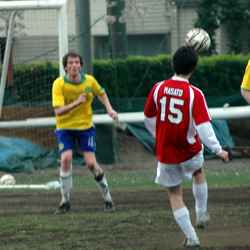
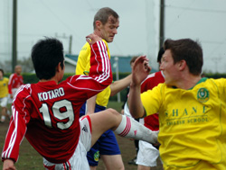

|
YC&AC, Sun 2nd April. British Embassy eased to a 2-0 victory over promotion chasing Shane FC at YCAC on a rain swept Sunday to extend their unbeaten record to 4 games.
A foul 20 yards out from goal allowed Reds midfielder Masa to curl-in a gem of a free kick over the Shane wall and into the bottom right corner of the goal after 25 minutes.
The lacklustre Shane were further punished when Embassy midfielder Satoshi pounced on an error by the Shane keeper after he spilled a shot from Kotaro on 70 minutes to effectively finish this game off as a contest.
Striker Ally inspired a Shane revival, but he saw two goal attempts thwarted by a resolute Embassy defence lead by the tenacious Gerard Brady and Mike Yeomans. While poor passing and even poorer finishing summed up the Yellows frustration.
The Embassy have shown signs of improvement in recent matches much to the delight of captain Tim Letheren and club manager Simon Collier. Shane by contrast will simply be asking what went wrong. Whatever happens in the remaining matches this season Shane have produced some good football this season and will definitely be gunning for promotion next season.
MOM: Masa - (British Embassy) – Worked his socks off and capped off a fine performance with a great goal.
Match photographer: Sid.
Reporter: Blip Pilot
|